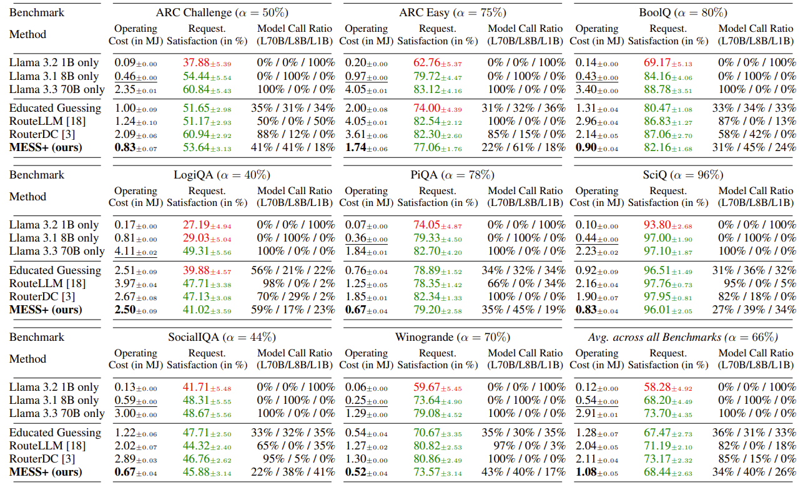

About Me
I am a high school student at Horace Greeley High School in Chappaqua, New York,
with substantial research experience despite my young age. In Summer 2025, I will
be an intern at Autodesk in Portland, Oregon. Previously, in Summer 2024, I
participated in a fellowship at the i4 FSI Lab at Westlake University,
where I contributed to the development of cost-effective bionic devices. Currently,
I am working on projects involving large language models and middleware at
IBM, under the mentorship of Dr. Shiqiang Wang and TUM Ph.D. candidate Herbert
Woisetschläger. I am passionate about taking on new challenges and eager to expand
my knowledge and skills.
Research Interests
- Generative AI: large language models, optimization, energy efficiency
- Distributed Learning: edge devices, federated learning, tinyML
- Robotics: bionic devices, locomotion, soft robotics, AI integration
News
- [October. 2025] Our paper has been accepted to the 2025 NeurIPS Main Conference!
View here.
- [April. 2025] Our Wharton High School Data Science Competition team was selected as a Finalist for the 2025 competition!
(Top 5 out of 500 Teams Internationally) View here.
- [October. 2024] Our paper has been accepted to the 2024 NeurIPS Workshop on Adaptive
Foundation Models! View here.
- [July. 2024] We complete our bionic fish project. View here.
Publications
-

Preprint. Under review.
Herbert Woisetschläger, Ryan Zhang, Shiqiang Wang, Hans-Arno Jacobsen
-
,Ryan Zhang, Herbert Woisetschläger, Shiqiang Wang, Hans-Arno Jacobsen
Adaptive Foundational Models Workshop (NeurIPS), 2024.
Powered by Jekyll and Minimal Light theme.